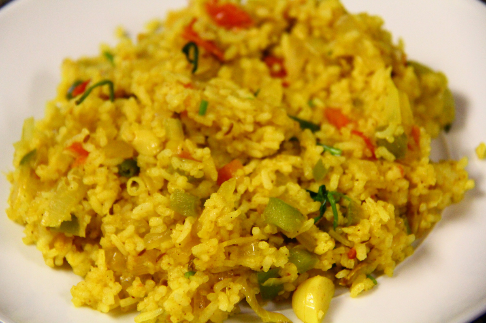

Tawa Pulav
Tawa Pulav is a quick recipe which is very famous in Mumbai roadside streets.It is an immensely tasty pulav.You should give it a try too.
Ingredients:
- Butter - 1tbsp.
- Garlic - 2 cloves(minced).
- Ginger - 1tsp.(grated).
- Cumin seeds - 1tsp.
- Fennel seeds - 1tsp.
- Green chili - 2(finely chopped).
- Onion - 1cup(finely chopped).
- Tomato - 1-2(Depends on your taste.Personally,i'm not a big fan of tomatoes.)(chopped finely).
- Capsicum - 1/2 cup.(any color of your choice.i used green one).
- Pav Bhaji masala - 1tbsp.
- Turmeric powder - 1tsp.
- Coriander powder - 1tsp.
- Cooked rice - 2-2 1/2 cups.
- Cooked peas - 1/2 cup.
- Coriander - 1/4 cup(chopped).
- Salt to taste.
Preparation:
- Heat butter in a large pan.
- Add the cumin & fennel seeds.Fry for 30 sec.
- When it is aromatic,add ginger,garlic,green chili & onions.
- Fry till it turns golden brown.
- Now add the capsicum & tomatoes.
- Fry for 2 min.Add water when needed.
- Now add masala, turmeric powder,coriander powder & salt.
- Mix well till the oil separates from the masalas.
- Now add peas, rice & coriander.
- Mix well & fry for 2-3 min.
- Delicious Tawa Pulav is ready...Enjoy...